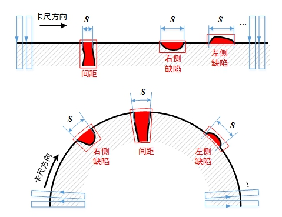

边检测工具针对直线和圆两种边缘类型，通过一组卡尺精确定位边缘特征，并拟合直线或者圆，根据卡尺边缘位置和拟合结果，检测直线或圆边缘的凹痕、凸痕、裂痕等类型偏差，给出偏差的数量、面积、尺寸等相关信息，完成边缘的连贯性检测。边检测示意如图1所示。
| 分类 | 参数名称 | 参数描述 |
|---|---|---|
| 属性窗口 | 边缘极性 | 边缘极性是指图像边缘灰度级的过渡形式，分为3种：任意极性、亮到暗和暗到亮。 |
| 对比度阈值 | 卡尺工具默认只采用对比度评价分数，即按照边缘信号的强度来评分，输出边缘最强的点。对比度阈值的取值范围是0~255。 | |
| 滤波器半宽 | 卡尺工具在直线（圆）的拟合过程中，会对图像进行滤波处理以增强边缘信息，其中滤波半宽是可调的，滤波半宽默认值为1。 | |
| 第一边缘 | 选择“是”，则启用第一边缘准则以获取最佳边缘。 |
|
| 最强边缘 | 选择“是”，则启用最强边缘准则以获取最佳边缘。 | |
| 分数阈值 | 对所有边缘进行评分，会得到一个评价分数，分数阈值是边缘评分的阈值，高于该阈值且评分最高的边缘被选为拟合边缘和候选边缘。 | |
| 是否过滤异常值 | 过滤异常值的目的是对拟合边缘（点）进行筛选，以降低偏差边缘给拟合带来的干扰。筛选的原则是基于拟合点在卡尺搜索方向上到拟合直线（圆）的距离，过滤距离较大的点，根据设定的距离阈值对拟合边缘进行更新。 | |
| 过滤距离阈值 | 过滤掉到拟合直线（圆）的距离大于过滤阈值的拟合点。以直线边缘为例，在卡尺搜索方向上，若拟合点到拟合线的距离大于过滤距离阈值，则去除该拟合点，剔除掉所有距离过大的拟合点后，再由剩下的其它拟合点重新拟合直线。 | |
| 是否重新评分 | 重新评分的目的是对候选边缘进行更新，以降低干扰边缘带来的误判。重新评分添加边缘到拟合线的距离作为新的评价指标，对每个卡尺的所有边缘进行评分，距离越小，分数越高，分数取值范围为[0,100]。重新评分后，将“重新评分”准则代替“第一边缘”准则（若有），再与“最强边缘”准则（若有）作几何评价，得到最终的评价分数，然后在每个卡尺内，选取分数最高的作为候选边缘。 | |
| 是否重新拟合 | 重新拟合是在重新评分的基础上更新拟合边缘：先将重新评分得到的候选边缘作为拟合边缘，若需要过滤异常值，则与过滤异常值拟合过程一样，先拟合直线（圆），根据拟合边缘到拟合线的距离剔除距离异常的拟合边缘，更新拟合边缘。 | |
| 最小缺陷距离 | 缺陷边缘到拟合线的最小距离，小于该距离，则不认为是缺陷。 | |
| 最大缺陷距离 | 缺陷边缘到拟合线的最大距离，大于该距离，则不认为是缺陷。 | |
| 是否启动尺寸 | 选择“是”，则显示最小尺寸和最大尺寸参数，并根据最小尺寸和最大尺寸对缺陷结果进行过滤。 | |
| 是否启动面积 | 选择“是”，则显示最小面积和最大面积参数，并根据最小面积和最大面积对缺陷结果进行过滤。 | |
| 缺陷排序规则 | 排序规则分为3种：尺寸、面积和位置，根据选择的规则对缺陷结果进行排序。其中，尺寸和面积为从大到小排序，位置为沿着卡尺方向从左到右排序。 | |
| 是否过滤左侧缺陷 | 沿着卡尺方向，位于拟合线左侧的缺陷为左侧缺陷。该参数选择“是”，则在缺陷结果中将左侧缺陷过滤掉。 | |
| 是否过滤右侧缺陷 | 沿着卡尺方向，位于拟合线右侧的缺陷为右侧缺陷。该参数选择“是”，则在缺陷结果中将右侧缺陷过滤掉。 | |
| 最大缺陷数目 | 缺陷结果数目的最大值，若缺陷数目超过该值，则按照缺陷排序规则，过滤掉缺陷结果中排在后位的缺陷。 | |
| 是否检测间距 | 选择“是”，则同时检测缺陷和间距，并显示最大间距数目、最小间距、最大间距、是否会略端点间距、间距排序规则等参数。 | |
| 最大间距数目 | 间距结果数目的最大值，若间距数目超过该值，则按照间距排序规则，过滤掉间距结果中排在后位的间距。 | |
| 最小间距 | 卡尺边缘到拟合线的最小距离，小于该距离，则不认为是间距。 | |
| 最大间距 | 卡尺边缘到拟合线的最大距离，大于该距离，则不认为是间距。 | |
| 是否忽略端点间距 | 选择“是”，则忽略掉端点间距。端点间距是在检测区域范围内位于两端的间距。 | |
| 间距排序规则 | 排序规则分为3种：尺寸、面积和位置，根据选择的规则对间距结果进行排序。其中，尺寸和面积为从大到小排序，位置为沿着卡尺方向从左到右排序。 | |
| 是否显示拟合结果 | 选择“是”，则显示图像检测区域内的拟合直线（圆）。 | |
| 是否显示缺陷区域 | 选择“是”，则显示图像检测区域内的缺陷。 | |
| 是否显示间距区域 | 选择“是”，则显示图像检测区域内的间距。 | |
| 检测区域 | 设置检测区域位置及尺寸。Rotation表示检测区域的旋转角度，Bend表示检测区域的弯曲度，通过调整可切换直线与圆检测区域。 | |
| 缺陷结果数目上限 | 对检测出的缺陷数目进行判定，如果缺陷数目超过此上限设置，工具执行结果失败。参数的取值范围为[0,100000]，可设置为——，此参数不生效。 | |
| 间距结果数目上限 | 对检测出的间距数目进行判定，如果缺陷数目超过此上限设置，工具执行结果失败。参数的取值范围为[0,100000]，可设置为——，此参数不生效。 | |
| 图像窗口 | 检测区域 | 图像中参与检测的矩形或环形区域。 |
| 输入图像 | 显示待检测的图像。 | |
| 数据链 | 输入图像 | 输入图像宽度、高度、像素大小，同图像窗口的输入图像参数。 |
| 二维线性变换 | 目标相对于模板的平移、旋转、缩放变换。 | |
| 高级界面 | 无 |
| 分类 | 参数名称 | 参数描述 |
|---|---|---|
| 监视窗口 | 输入图像 | 输出图像宽度、高度、像素大小。 |
| 缺陷结果 | 缺陷的位置、尺寸、面积等信息。 | |
| 间距结果 | 间距的位置、尺寸、面积等信息。 | |
| 缺陷结果数目 | 过滤后的缺陷结果总数目。 | |
| 间距结果数目 | 过滤后的间距结果总数目。 | |
| 执行结果 | 工具执行结果。 | |
| 执行时间 | 工具执行时间。 | |
| 图像窗口 | 输入图像 | 显示工具执行结果图像，同监视窗口的输入图像参数。 |
| 拟合直线（圆） | 属性窗口的是否显示拟合结果参数选择是时，显示图像检测区域内的拟合直线（圆）。 | |
| 缺陷结果 | 属性窗口的是否显示缺陷结果参数选择是时，显示图像检测区域内的缺陷结果。 | |
| 间距结果 | 属性窗口的是否显示间距结果参数选择是时，显示图像检测区域内的间距结果。 | |
| 执行结果 | 显示工具执行结果，执行成功显示“OK”，执行失败显示“NG”，同监视窗口的执行结果参数。 | |
| 缺陷起始点 | 输出所有缺陷的起始点。 | |
| 缺陷终止点 | 输出所有缺陷的终止点。 | |
| 间距起始点 | 输出所有间距的起始点。 | |
| 间距终止点 | 输出所有间距的终止点。 | |
| 数据链 | 缺陷结果 | 输出缺陷的位置、尺寸、面积等信息，供后序工具使用，同监视窗口的缺陷结果参数。 |
| 间距结果 | 输出间距的位置、尺寸、面积等信息，供后序工具使用，同监视窗口的间距结果参数。 | |
| 缺陷起始点 | 输出所有缺陷的起始点。 | |
| 缺陷终止点 | 输出所有缺陷的终止点。 | |
| 间距起始点 | 输出所有间距的起始点。 | |
| 间距终止点 | 输出所有间距的终止点。 |

卡尺的边缘极性是根据图像边缘的灰度级过渡形式来确定的。如图2所示，沿着卡尺Y轴正方向(红色箭头所指的方向)，图像边缘的灰度级过渡形式如果是从亮到暗，则边缘极性选择亮到暗，反之选择暗到亮，如果图像边缘的灰度级过渡形式不确定时选择任意极性。
偏差的尺寸、面积、区域、位置等物理量的概念与计算方式如下表所示。
| 偏差类型 | 示意图 | 说明 |
|---|---|---|
| 直线缺陷 | 尺寸：左右缺陷卡尺与拟合线交点距离；面积：缺陷卡尺候选点到拟合线距离（卡尺搜索方向）的均值与尺寸的乘积；区域：仿射矩形，图中红色区域所示；位置： 缺陷区域右下角 | |
| 圆缺陷 | 尺寸：左右缺陷卡尺与拟合圆交点所在弧线段距离；面积：缺陷卡尺候选点到拟合圆距离（卡尺搜索方向）的均值与尺寸的乘积；区域：扇形，图中红色区域所示；位置：扇形区域右下角 | |
| 直线间距 | 尺寸：左右间距卡尺与拟合线交点距离；面积：卡尺搜索长度与尺寸的乘积；区域：仿射矩形，图中红色区域所示；位置：缺陷区域右下角 | |
| 圆间距 | 尺寸：左右间距卡尺与拟合圆交点所在弧线段距离；面积：卡尺搜索长度与尺寸的乘积；区域：扇形，图中红色区域所示；位置：扇形区域右下角 |
依次对单个卡尺的所有边缘进行评分，获取评价分数最高的边缘，作为拟合边缘和候选边缘。边检测工具提供“第一条边缘”、“最强边缘”两个准则来评价边缘。两个准则至少选取一个，若两个准则同时采用，取两个准则评价分数的几何平均作为评价分数。
其中，“第一条边缘”准则以中心偏移（即边缘位置相对于投影区域中心位置的偏移，其值可正可负）作为评价指标，中心偏移值越小分数越高；“最强边缘”准则以边缘幅值（即边缘两侧像素灰度差）作为评价指标，边缘幅值越大分数越高。分数值域范围为[0,100]。
边检测工具需要配合数组解析工具和边特征检测工具结果解析使用。数组解析工具的数据类型属性选择“EdgeDeviation”就可以获取边检测工具的缺陷结果和间距结果输出，再利用边特征检测工具结果解析可以数组解析工具的输出结果进行解析。
边检测工具的缺陷结果数据和间距结果数目可以直接获取，类型为int。
参见“\Samples\边特征检测工具结果解析.gvp”。